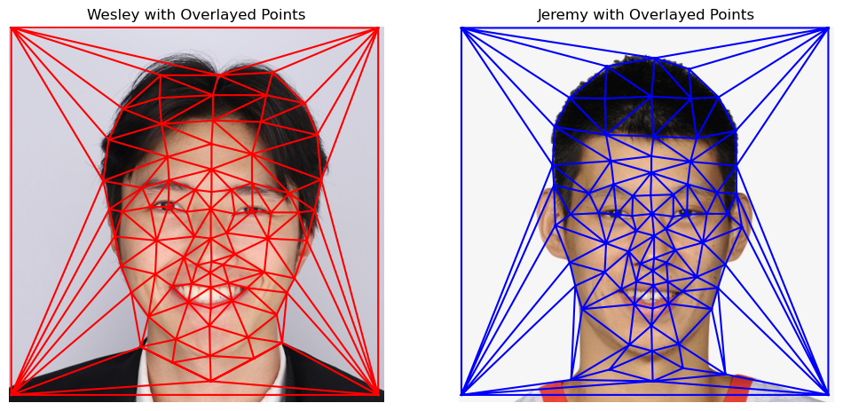
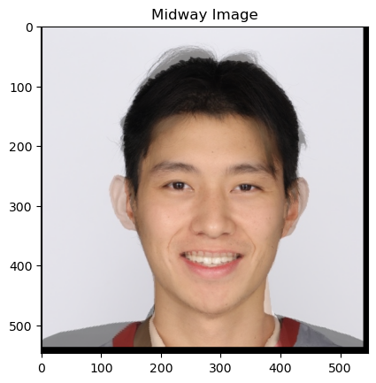

CS 180 Proj 3: Face Morphing
Part 1: Defining Correspondences
Delauney Triangulation of Both Images

Part 2: Computing the "Mid-Way" Face
Wesley Image
Wesley Jeremy Midway Image

Jeremy Image
Part 3: The Morph Sequence
Part 4: The "Mean face" of a population
Part 5: Caricatures: Extrapolating from the mean
Bells and Whistles: Changing Ethnicity